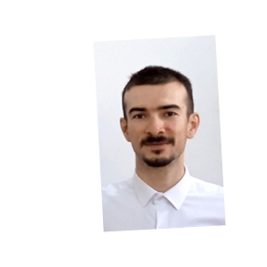

Hi, I'm Robert. I was born in '96 and my passion for computers started early, in the CD/DVD era, when I
was 12 years old.
I knew how to fix computers, and was constantly finding new ways to break them.
Later, I followed computer science education and started working as a software engineer.
My main principle when working is keeping things simple and maintainable.
- Experience
-
Agile Freaks, Sibiu Front end dev for 1 year 5 months, started 2021
-
Main responsibilities: front end development, code reviews, bug
fixing, writing concise PR descriptions and clear test steps for QA team,
ticket complexity estimation, code quality improvement,
app demo for clients, status updates to clients,
continuous research on libraries and tools,
brainstorming app architecture
-
Occasional responsibilities: attending tech presentations, testing, bug reporting, helping
QA with their local setup,
Docker configuration, ticket creation, ticket updating and maintenance, facilitating
meetings with clients
- Projects:
- Web questionnaire with complex, interdependent questions, and custom logic
built using Elm, js, css, html, Node.js, Docker, microservices
- Movie streaming app for Chromecast
built with Javascript, css, html, Google Cast SDK, Node.js, Webpack, Docker
- Test projects implemented as part of my recruitment process:
-
App for managing a list of to do items
using React, js, css, html, json-api
-
Displaying a list of coffee shop locations on the map, and distance to user
using React, js, css, html, json-api
Other projects personal/volunteered
-
high-oleic.eu 2024 - I volunteered to build the website for
a
local sunflower oil business in Sibiu
layout design, wording, implementation, testing, maintenance, using WordPress
-
multimedia-html-cast 2023
- personal app for casting movies from PC to Smart TV in LAN
using React, Node.js, CSS
-
ninety-nine-elm-problems
2023 - educational/personal website for showcasing the functional programming style and Elm
language
interactive solutions, using Elm, to the 99 fundamental problems proposed by Werner Hett
- Skills
-
Fundamental skills
- Good base of computer science knowledge
Eight years of formal education in computer science.
- Common sense and reasoning
Understanding trade-offs between clean code, maintaiable code, deadlines & delivery,
tech debt, app performance, and team harmony.
- Communication and teamwork
Keeping my team and clients up to date, resolving blockers,
facilitating meetings, writing concise documentations, demos, and presentations.
- Information synthesis and self-learning
Searching the information I need, filtering out what's irrelevant,
keeping what's useful. For me, working and learning are intertwined activities.
- Passion and enthusiasm
Keeping interactions enjoyable for people around me. Enthusiasm is contagious, and I like
spreading good vibes.
- Technical flexibility and adaptability
Ready to change and adapt. Focusing on common key-concepts and patterns,
so when things change I know what to look for and compare.
Languages, frameworks and tools
Elm, React, HTML, CSS, Javascript, MySQL, Java, C/C++, Node.js, Webpack, Docker, Git,
(see more on my Github
profile)
- Education
-
Lucian Blaga University of Sibiu, Computer Science, started 2015
Faculty of Engineering
- Top student, qualified for scholarship
-
Projects include:
-
Extra trainings and tech meetings I enrolled in as a student:
-
2 week Software Engineering training organized by BearingPoint
Database design, Java, Maven, Git, Trello, Slack in a team of 6
students
-
"Meet the Geeks" weekly interactive presentations organized by Visma
Diagrams, Web scraping, Web security, OOP principles, Machine learning, Data
science
-
Java Remote Learning 2017 organized by iQuest
OOP, Interfaces, Polymorphism, Exceptions, Reflection, etc. in a team of 6
students
-
Results from coding competitions for students:
-
Originality Award for Visma Shortest Code Contest (solving a problem using the
least
amount of code), 1st edition
-
3rd place in Visma Shortest Code Contest, 2nd
edition
-
Nice to have:
Highschool Mathematics and Computer Programming, started 2011
Gib Mihăescu National College of Drăgășani
- Bac scores: Mathematics: 10.00(max score),
Computer Programming: 9.00,
Romanian Language and Literature: 9.20
- Hobbies
- Outdoor activities, DIY crafts and repairs